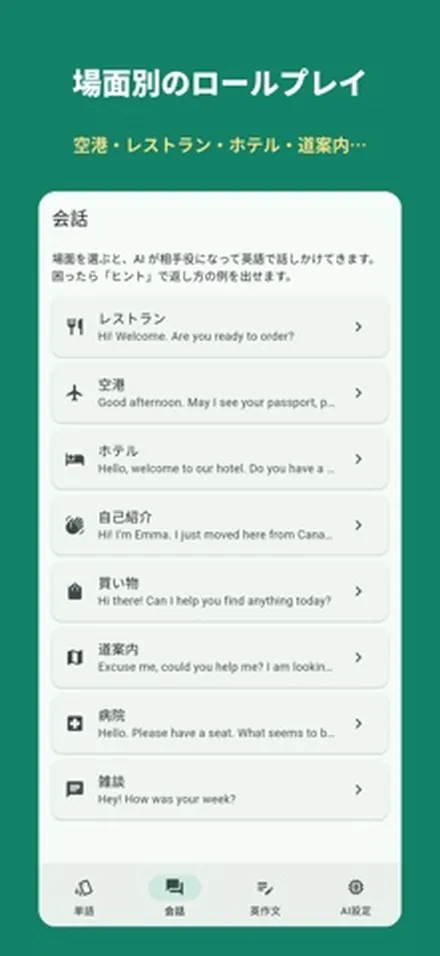
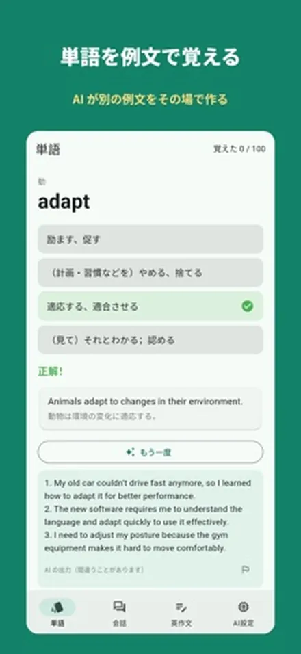

Offline AI English
オフライン英語AI英会話・英単語・英作文｜iPhone・Android アプリ
オフライン英語は、AI がスマホの中で動く英語学習アプリです。最初に AI モデルを一度ダウンロードすれば、あとはインターネットにつながっていなくても、AI と英会話の練習ができます。
対応: iPhone ／ 価格: 無料（広告なし） ／ 提供: 株式会社St.Arkid
こんな人におすすめ
- 機内や海外など、通信できない場所でも英会話を練習したい人
- 空港・レストラン・ホテルなど旅行の場面の英語を練習したい人
- 会話の内容を外部に送らずに、AI と英語を練習したい人
主な特徴
端末内 AI と英会話
空港・レストラン・ホテル・道案内など、場面ごとのロールプレイ会話。返し方に迷ったら「ヒント」で答え方の例を表示します。
英単語と例文
よく使う英単語を、日本語の意味と例文で覚えます。AI がその単語を使った別の例文を作ります。
英作文
和文英訳の問題に答えると、大事な表現が入っているかをチェック。AI が同じ内容の別の言い方を提案します。
正確さへの工夫
単語の意味と英作文の判定は、AI ではなくアプリに収録したデータで行います。
会話は端末の外に出さない
AI の処理はすべて端末の中。アカウント登録なし、広告なし、トラッキングなしです。
スクリーンショット


よくある質問
本当にインターネットなしで使えますか？
最初に「AI設定」で AI モデル（約0.5〜1.3GB）をダウンロードすれば、あとは機内モードでも使えます。Apple Intelligence に対応した iPhone では、ダウンロードなしで Apple の端末内 AI を使えます。
会話の内容は送信されますか？
いいえ。AI の処理はすべて端末の中で行い、会話の内容はどこにも送りません。学習の記録も端末の中だけに保存します。
AI の答えは正しいですか？
AI の出力は間違うことがあります。そのため単語の意味と英作文の判定は収録データで行い、AI は会話・例文・言い換えを担当します。不適切な出力は「報告」から知らせられます。
サポート
使い方や不具合のご連絡は、サポートページをご覧ください。
サポート・お問い合わせ ・ プライバシーポリシー ・ 利用規約